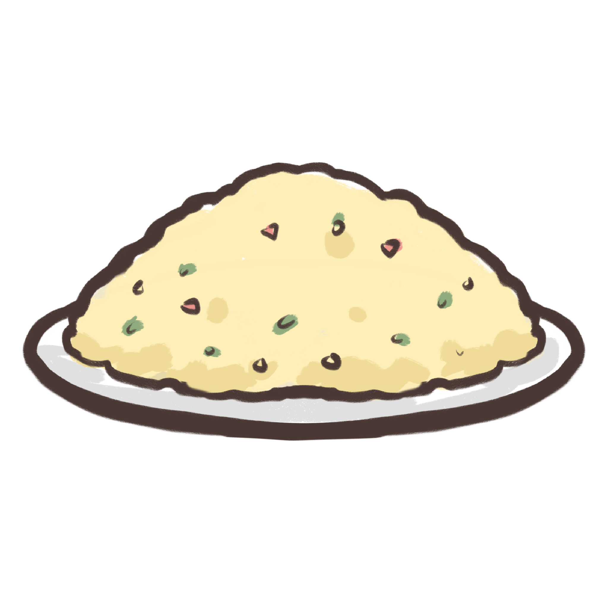

Ingredients
- Vegetable oil1 tbsp
- Egg2
- Bacon rashers2
- Frozen peas1/2 cup
- Sesame seedsany
- Carrot1
- Soy sauce1 tbsp
- Riceany
- Sliced green shallotsany
Fried rice is a dish of cooked rice that has been stir-fried in a wok or a frying pan and is
usually mixed with other ingredients such as eggs, vegetables, seafood, or meat. It is often
eaten by itself or as an accompaniment to another dish. Fried rice is a popular component of
East Asian, Southeast Asian and certain South Asian cuisines, as well as a staple national dish
of Indonesia. As a homemade dish, fried rice is typically made with ingredients left over from
other dishes, leading to countless variations. Fried rice first developed during the Sui Dynasty
in China.
How to cook:
| 1. | Cook the rice in a large saucepan of boiling water for 12 minutes or until tender. Drain and leave to cool. |
| 2. | Heat oil in non-stick wok or large frying pan over medium heat. Add eggs. Swirl over base to form an omelette. Cook for 2 minutes or until set. Transfer to a chopping board. Set aside to cool slightly. Roll up and thickly slice. |
| 3. | Add bacon to wok. Cook 4 minutes until light golden. Add carrot. Stir fry 1 minute. Add shallots, peas and rice. Cook, stirring, 3-4 minutes. Add egg and soy sauce. Stir until heated through. Sprinkle with sesame seeds and top with extra shallots. Serve immediately. |